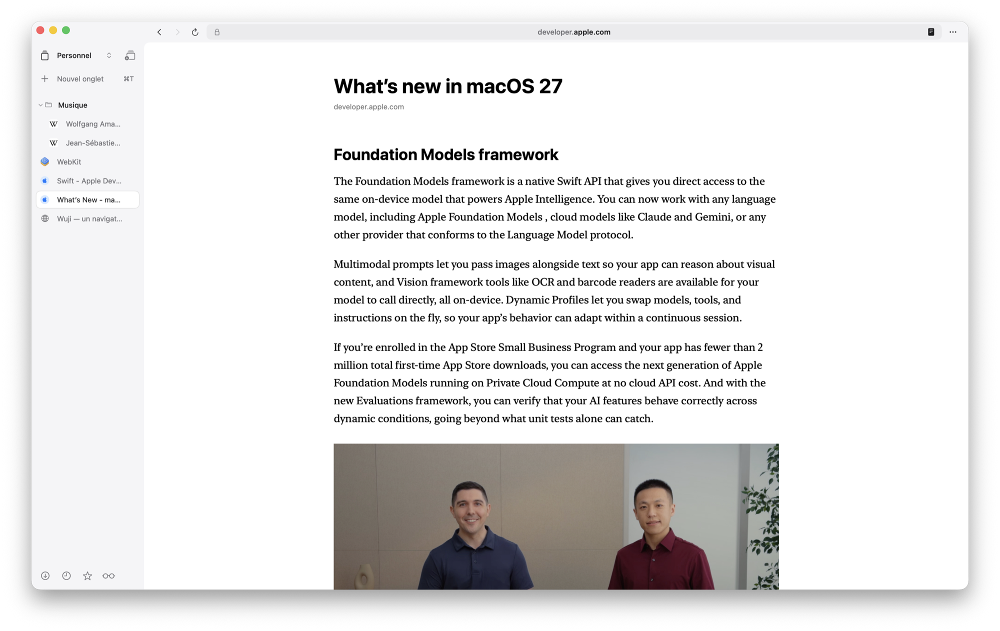

WujiLire et garder
Lire et garder
Lire une page comme on la veut, la garder pour plus tard, la retrouver, l'emporter. Rien de ce que vous lisez ne part chez quelqu'un pour être nettoyé.
Des pages sombres, sous la lune
La lune de la barre du haut rend la page sombre — sans recharger, et sans retourner les photos.

La version du site, ou une fabriquée
« Sombre » prend la version sombre du site s'il en a une — GitHub, la documentation de Python ou d'Apple sont reconnus et laissés tels quels —, et en fabrique une sinon. « Désactiver sur ce site » garde l'original là où il rend mieux.
Sans recharger
La page change sous les yeux : un formulaire à moitié rempli le reste.
Élément par élément, pas un filtre
Chaque fond, texte, bordure et dégradé est relu tel que la page le calcule, puis réécrit plus sombre en gardant sa teinte. Un bouton orange reste orange, une photo n'est jamais touchée, une icône sombre est inversée pour rester visible.
Il suit la page
Un menu qui s'ouvre, une feuille arrivée en retard, un style qu'un cadriciel réécrit, les ::before : tout est repris à mesure, par lots de 12 ms, sans que la page apparaisse blanche d'abord.
Mesuré, texte par texte
Un banc de quinze pages pièges mesure le contraste de chaque texte sur son fond réel : 0 texte illisible sur 5 200, aucune page restée claire.
Le mode lecture

L'article, et rien d'autre
⇧⌘R. Le bloc se choisit à sa densité de liens : un menu, un pied de page, une colonne de recommandations sont faits de liens, un paragraphe n'en a presque pas.
Rien ne part
Les services de lecture différée envoient l'adresse, parfois la page entière, chez quelqu'un pour la nettoyer. Ici, la machine qui affiche est celle qui nettoie.
La liste de lecture
Hors ligne
⇧⌘L met la page de côté, avec son article : on le relit sans réseau depuis wuji://reading, où ce qui reste à lire passe avant ce qui est lu.
Lire plus tard
Sur un lien, « Lire plus tard » garde l'adresse sans ouvrir la page. La liste s'ouvre aussi dans la colonne de droite.
Un article gardé ne peut rien exécuter
Scripts, cadres, attributs on… et liens javascript: sont retirés, et la page de l'article interdit tout script par sa politique de sécurité.
Favoris et historique

Des favoris rangés
⌘D met la page de côté, ⇧⌘B ouvre les favoris. Dossiers et sous-dossiers, rangement au glisser ou par « Ranger dans… ».
La page, pas la section
Un favori retient la page : une ancre de section (#raccourcis) est retirée, celle d'une application qui route par l'ancre (#/inbox) est gardée.
Importer ceux d'un autre navigateur
Chrome, Brave, Edge, Arc et Vivaldi se lisent sur place ; Safari aussi quand macOS le permet ; l'export HTML de n'importe quel navigateur se choisit à la main. Sans doublon, et le nombre est annoncé avant d'écrire.
L'historique entier
⌘Y ouvre wuji://history : tout l'historique, jour par jour, avec une recherche. Il se garde le temps que vous choisissez, et s'efface ligne par ligne ou d'un coup.
Téléchargements
Ce que le web demande
Un lien porteur de l'attribut download, un fichier servi en pièce jointe, un blob: qu'un script fait cliquer : tous se téléchargent, sous le nom que la page a demandé.
Reprendre après une coupure
Un téléchargement interrompu survit à la fermeture, marqué « interrompu », avec son bouton. Rien n'est repris tout seul : reprendre deux gigaoctets sur un partage de connexion serait une décision qu'on n'a pas prise.
Des noms qui ne se marchent pas dessus
Deux fichiers du même nom lancés dans la même seconde ne s'écrasent plus, et un nom qui tenterait de sortir du dossier est réduit à son dernier segment.
Dans la colonne
⌘J ouvre la page des téléchargements ; la colonne de droite les montre aussi, et le bouton du pied de colonne dit leur avancement.
Enregistrer, imprimer, capturer
Enregistrer la page
⌘S : archive web pour la garder navigable, PDF pour la figer — la page entière, pas la seule zone visible.
Imprimer
⌘P, avec le panneau d'impression du système.
La page entière
Parcourue écran par écran puis recousue, telle qu'on la voit : la vidéo qui joue et les images qui ne se chargent qu'en approchant y sont.
Une zone, un élément
On trace une zone, ou l'on désigne un élément au survol — ↑ et ↓ élargissent ou resserrent. Un élément plus haut que sa fenêtre, comme le fil d'une messagerie, est parcouru là où il défile.
Rangée et copiée
Chaque capture va dans les téléchargements et dans le presse-papiers. Pas de raccourci : ⇧⌘3, ⇧⌘4 et ⇧⌘5 sont ceux du système.